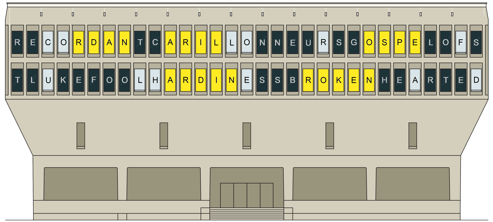

The answers that go with this puzzle are:
| Puzzle | Answer |
|---|---|
| Cemetery Boys | BROKENHEARTED |
| Pippi Långstrump/Pippi Longstocking | CARILLONNEURS |
| The Hobbit | FOOLHARDINESS |
| Crewel | GOSPEL OF ST LUKE |
| Kid Start-up | RECORDANT |
Each answer in this meta has a substring that can be anagrammed into a unit of currency. These answers can be placed in the grid such that these letters can be placed in the spaces with dollar signs, with the first letter on the smallest dollar sign, and subsequent letters on dollar signs of increasing size. Read off the letters that are on the shades.

| Answer | Currency | Extracted letters |
|---|---|---|
| RECORDANT | RAND | CO |
| CARILLONNEURS | RIAL | LOR |
| GOSPEL OF ST LUKE | PESO | FUL |
| FOOLHARDINESS | DINAR | HE |
| BROKENHEARTED | KRONE | AD |
Reading down the list of letters yields COLORFUL HEAD.